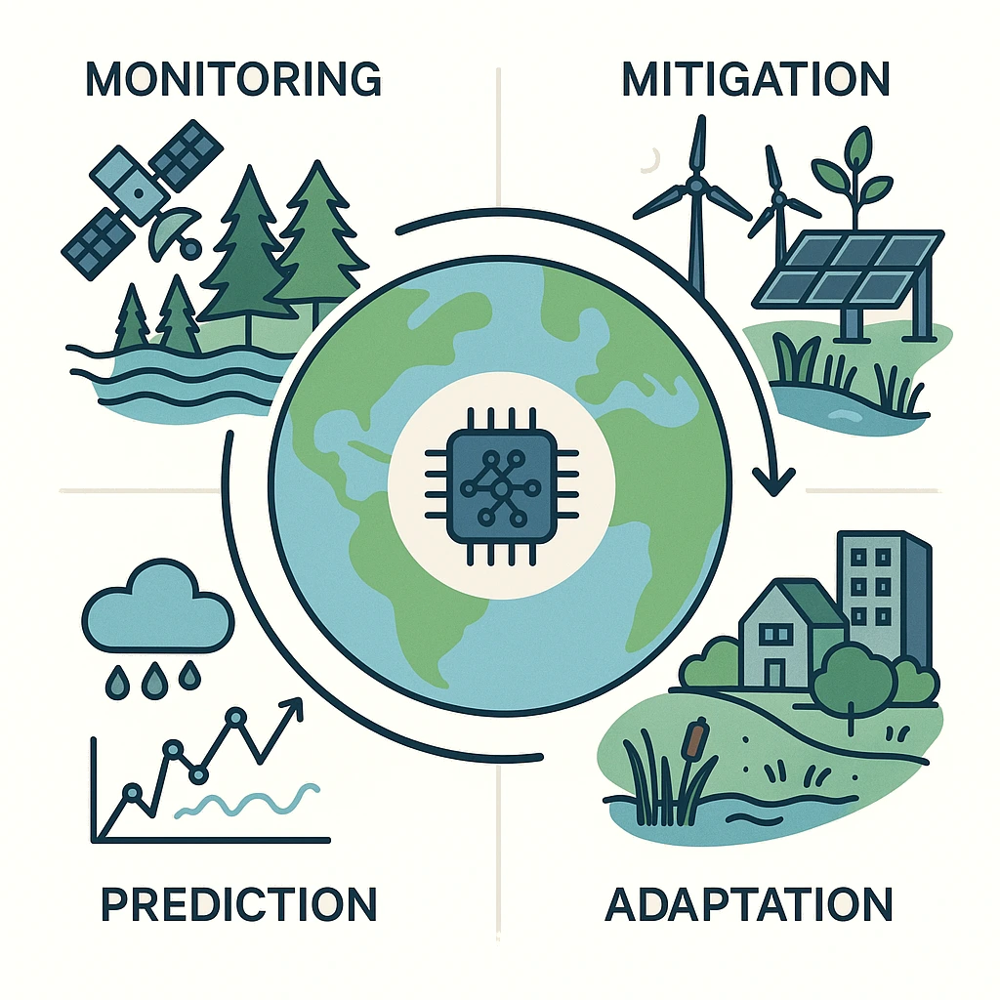
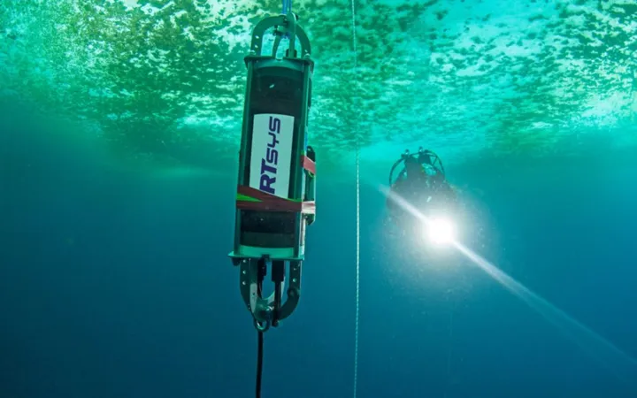
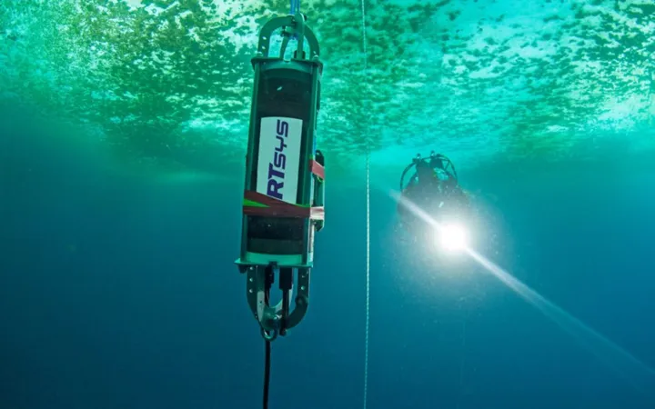

AI for climate adaptation and mitigation
AI for environmental data, Uppsala University
Olof Mogren, RISE Research Institutes of Sweden

Climate change
A multifaceted challenge benefiting from AI at every level
- Monitoring
- remote sensing, sensor networks, bioacoustics
- Mitigation
- Emission reduction and carbon sequestration
- Adaptation
- Prediction
- Weather systems and extreme events
Why climate adaptation and mitigation?
- Urgency of climate action: adaptation vs mitigation
- Role of data and AI in accelerating solutions
The AI toolbox for climate solutions
- Machine learning, optimization, deep learning, reinforcement learning
- Distinction between prediction, decision support, and control
Framework: where AI can help
- Adaptation: managing risks, resilience, local solutions
- Mitigation: reducing emissions, improving efficiency, accelerating transitions
AI in climate finance and policy (Alp Kucukelbir)
- Equity and fairness in AI-driven climate decisions
- Risk assessment and trustworthy ML for climate policy
- Example: modeling insurance/financial risk for vulnerable communities
- (CHECK ALP's TALK)!
AI and power systems (Priya Donti)
- Grid optimization and renewable integration
- Forecasting demand and generation for clean energy
- Democratizing access to climate-relevant AI tools
- CHECK PRIYA's TALK!
AI for optimizing urban green spaces
- Turning “grey” into “green”: Malmö & Uppsala examples
- Satellite data + machine learning for site selection
- Optimization of cooling, biodiversity, and carbon benefits
AI for climate-smart agriculture
- Precision irrigation and yield prediction
- Pest/disease detection under climate stress
- Example: ML-based decision support for smallholder farmers
AI for transportation and emissions reduction
- Route optimization and electric vehicle charging
- Reducing congestion and fuel use
- Example: ML in logistics and shipping
- Example: buildings, heating
AI for decision support and progress analysis
- See next lecture!
- But also add stuff here.
AI for carbon capture and materials discovery
- Discovering new materials for batteries, carbon capture
- Accelerating climate solutions through generative models
Climate Change AI and Climate AI Nordics
Merge slides below in right place!

 
